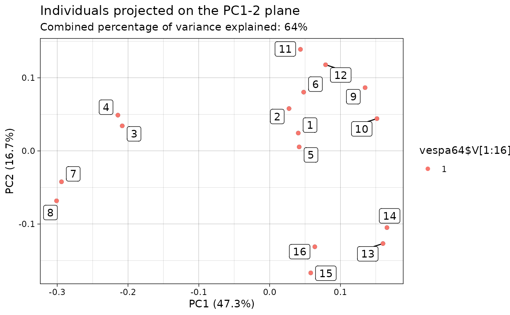

This function creates a visualization of the results of the PCA applied on a sample of QTS and returns the corresponding ggplot2::ggplot object which enable further customization of the plot.
Arguments
- object
An object of class
prcomp_qtsas produced by theprcomp.qts_sample()method.- what
A string specifying what kind of visualization the user wants to perform. Choices are words starting with
PCand ending with a PC number (in which case the mean QTS is displayed along with its perturbations due to the required PC) orscores(in which case individuals are projected on the required plane). Defaults toPC1.- ...
If
what = "PC?", the user can specify whether to plot the QTS in the tangent space or in the original space by providing a boolean argumentoriginal_spacewhich defaults toTRUE. Ifwhat = "scores", the user can specify the plane onto which the individuals will be projected by providing a length-2 integer vector argumentplanewhich defaults to1:2.
Value
A ggplot2::ggplot object.
Examples
df <- as_qts_sample(vespa64$igp[1:16])
res_pca <- prcomp(df)
# Plot the data points in a PC plane
# And color points according to a categorical variable
p <- ggplot2::autoplot(res_pca, what = "scores")
#> The `plane` length-2 integer vector argument is not specified. Defaulting to
#> 1:2.
p + ggplot2::geom_point(ggplot2::aes(color = vespa64$V[1:16]))
